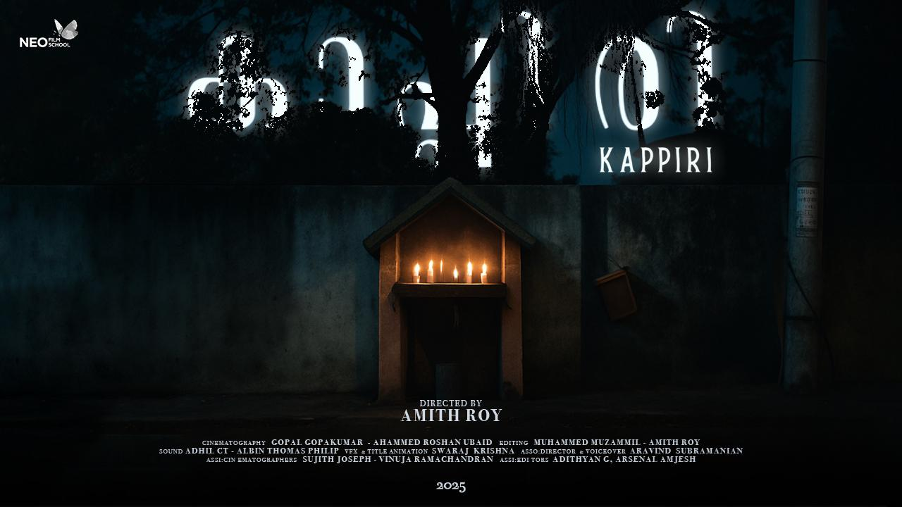

Kappiri
Assistant Editor
Assistant editing work on Kappiri (2025), directed by Amith Roy.
Read project details
Role: Assistant Editor. Director: Amith Roy. Year: 2025.
Aadithyan Gopakumar
Video Editor BSc Gaming Student
I’m Aadithyan Gopakumar. I create posters, edit visual stories and build 3D work and games with Blender, Maya and Unity.
Bengaluru, India Video · 3D · Games
Scroll to explore01 / About
Aadithyan
Gopakumar.
I’m a freelance video editor and BSc Gaming student based in Bengaluru. My practical experience includes video editing, content creation and creative software.
Premiere Pro is my main editing tool. Alongside video editing, I create posters and work with Blender and Maya. I’m also familiar with After Effects, Final Cut Pro and Cinema 4D, with hands-on exposure to Unity and C# through game development projects.
I’m currently expanding my knowledge of AWS Cloud and AI tools, with an interest in the wider IT and technology industry.
Download résuméExperience
Education
JAIN (Deemed-to-be University)
Bengaluru
Higher Secondary / +2
State Board
Class 10
CBSE
02 / Projects
Explore all work
Assistant Editor
Assistant editing work on Kappiri (2025), directed by Amith Roy.
Role: Assistant Editor. Director: Amith Roy. Year: 2025.
A basic 2D game developed as part of a structured Unity course, exploring gameplay mechanics and the game-development workflow.
What I worked on
In progress
New projects will appear here.
03 / Skills
Creative practice. Technical curiosity.
01 / Video editing
My primary editing software for footage, transitions, audio, effects and colour correction.
02 / Creative software
Familiar with additional editing, motion and 3D tools.
03 / Game development
Hands-on exposure through a basic 2D game project and practical coursework.
04 / Currently learning
Expanding my understanding of cloud technology and AI tools.
Working with others
04 / Contact
For video editing projects and creative opportunities.
Email me aadithyangopakumar@gmail.com+91 85902 89500Bengaluru, India